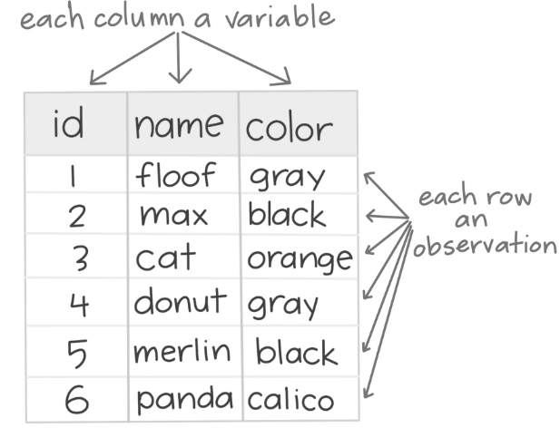

Tidy Data
IN2039: Data Visualization for Decision Making
Department of Industrial Engineering
Agenda
- Tidy Data
- tidyr within the Tidyverse
- Data Wrangling
Tidy Data
A new library: tidyr

tidyr allows you to reshape and regroup a dataset.
It is part of a collection of data science packages called tidyverse.
Load it to Google Colab with the following code.
Data Science Workflow

- Every data science project involves importing, tidying, transforming, visualizing, modeling, and communicating data.
- Import: Bring raw data into R.
- Tidy: Reshape into a consistent format.
- Transform: Create new variables and summaries.
- Visualize: Explore patterns visually.
- Model: Fit statistical or machine learning models.
- Communicate: Share insights clearly.
Why do we need tidy data?
“Tidy datasets are easy to manipulate, model, and visualize.” — Hadley Wickham
- Tidy data make R tools work together smoothly.
- Each tidy dataset is like a well-organized spreadsheet.
- Making your data tidy allows you to avoid common errors that occurred in the data analysis.
- The tidyr package has functions to make your data tidy.
Tidy Data
In tidy data:
- Each variable is in a column
- Each observation is in a row
- Each cell is a single measurement.


Indeed, many industrial datasets are not tidy. For instance:
| Dataset | Problem |
|---|---|
| Production reports in Excel | Values stored in column names |
| Maintenance logs | Multiple variables combined in one column |
| Quality inspections | Missing or inconsistent codes |
Example
# A tibble: 3 × 3
store jan_sales feb_sales
<chr> <dbl> <dbl>
1 A 100 110
2 B 80 95
3 C 120 130Problem: Not Tidy!
- Variable names (
jan_sales,feb_sales) store values (months). - Each column should represent a variable, not a combination of variables.
- Each row should represent a single observation.
REMOVE
# A tibble: 6 × 3
name subject score
<chr> <chr> <dbl>
1 Ana math 90
2 Ana english 88
3 Luis math 80
4 Luis english 95
5 Carmen math 85
6 Carmen english 92# A tibble: 3 × 3
id q1_morning q1_evening
<int> <dbl> <dbl>
1 1 5 4
2 2 3 2
3 3 4 3# A tibble: 6 × 4
id question time response
<int> <chr> <chr> <dbl>
1 1 q1 morning 5
2 1 q1 evening 4
3 2 q1 morning 3
4 2 q1 evening 2
5 3 q1 morning 4
6 3 q1 evening 3tidyr within the Tidyverse
The role of the tidyr package
- tidyr works seamlessly with dplyr.
- While dplyr focuses on data manipulation, tidyr focuses on data structure.
- Together, they make your data clean and consistent before visualization or modeling.
tidyr’s functions
The tidyr provides functions for reshaping, organizing, and completing data.
| Purpose | Function 1 | Function 2 |
|---|---|---|
| Pivoting | pivot_longer() |
pivot_wider() |
| Splitting / Combining | separate() |
unite() |
| Nesting / Unnesting | nest() |
unnest() |
| Handling Missing Data | complete() |
fill() |
Example Dataset: production_data
# A tibble: 3 × 3
factory jan_output feb_output
<chr> <dbl> <dbl>
1 A 120 130
2 B 150 160
3 C 100 90pivot_longer()
Transform columns into rows (convert from wide to long format).
# A tibble: 6 × 3
factory month output
<chr> <chr> <dbl>
1 A jan_output 120
2 A feb_output 130
3 B jan_output 150
4 B feb_output 160
5 C jan_output 100
6 C feb_output 90pivot_wider()
Transform rows into columns (convert from long to wide format).
# A tibble: 3 × 3
factory jan_output feb_output
<chr> <dbl> <dbl>
1 A 120 130
2 B 150 160
3 C 100 90separate()
Split one column into multiple columns.
# A tibble: 6 × 4
factory month variable output
<chr> <chr> <chr> <dbl>
1 A jan output 120
2 A feb output 130
3 B jan output 150
4 B feb output 160
5 C jan output 100
6 C feb output 90unite()
Combine multiple columns into a single column.
# A tibble: 6 × 3
factory month_variable output
<chr> <chr> <dbl>
1 A jan_output 120
2 A feb_output 130
3 B jan_output 150
4 B feb_output 160
5 C jan_output 100
6 C feb_output 90nest()
Create nested data frames for grouped data — useful for modeling or list-columns.
# A tibble: 3 × 2
# Groups: factory [3]
factory data
<chr> <list>
1 A <tibble [2 × 2]>
2 B <tibble [2 × 2]>
3 C <tibble [2 × 2]>unnest()
Expand a nested data frame back into regular rows.
# A tibble: 6 × 3
# Groups: factory [3]
factory month output
<chr> <chr> <dbl>
1 A jan_output 120
2 A feb_output 130
3 B jan_output 150
4 B feb_output 160
5 C jan_output 100
6 C feb_output 90complete()
Ensure all combinations of variables exist, filling in missing observations.
# A tibble: 4 × 3
factory month output
<chr> <chr> <dbl>
1 A feb 130
2 A jan 120
3 B feb NA
4 B jan 150fill()
Fill missing values with the most recent non-missing value.
# A tibble: 4 × 3
factory month output
<chr> <chr> <dbl>
1 A feb 130
2 A jan 120
3 B feb 120
4 B jan 150Why Visualization Loves Tidy Data
Every plot requires data in long format:
x-axis: variable (e.g., month)
y-axis: measurement (e.g., output)
color/fill: grouping variable (e.g., factory)
That’s why pivot_longer() is your best friend before plotting.
“Tidy data is the bridge between raw numbers and clear insight.” — Hadley Wickham
Data Wrangling
Data Wrangling
- Data wrangling is the process of transforming raw data into a clean and structured format.
- It involves merging, reshaping, filtering, and organizing data for analysis.
- Here, we illustrate some special functions of the tidyverse for cleaning common issues with a dataset.
Read the dataset
Example 2
Consider an industrial engineer who receives a messy Excel file from a manufacturing client. The data file is called “industrial_dataset.xlsx”, which file includes data about machine maintenance logs, production output, and operator comments.
The goal is to clean and prepare this dataset using pandas so it can be analyzed.
Let’s read the data set into R
# A tibble: 6 × 5
`Machine ID` `Output (units)` `Maintenance Date` Operator Comment
<dbl> <chr> <dttm> <chr> <chr>
1 101 1200 2023-01-10 00:00:00 Ana "ok"
2 101 1200 2023-01-10 00:00:00 Ana "ok"
3 102 1050 2023-01-12 00:00:00 Bob "Needs oil!"
4 103 error 2023-01-13 00:00:00 Charlie "All good\r\n"
5 103 950 2023-01-13 00:00:00 Charlie "All good\r\n"
6 104 900 2023-01-14 00:00:00 <NA> "Delay: power issu…Remove duplicate rows
Duplicate or identical rows are rows that have the same entries in every column in the dataset.
If only one row is needed for the analysis, we can remove the duplicates using the distinct() function.
# A tibble: 6 × 5
`Machine ID` `Output (units)` `Maintenance Date` Operator Comment
<dbl> <chr> <dttm> <chr> <chr>
1 101 1200 2023-01-10 00:00:00 Ana "ok"
2 102 1050 2023-01-12 00:00:00 Bob "Needs oil!"
3 103 error 2023-01-13 00:00:00 Charlie "All good\r\n"
4 103 950 2023-01-13 00:00:00 Charlie "All good\r\n"
5 104 900 2023-01-14 00:00:00 <NA> "Delay: power issu…
6 105 870 NA DAVE "completed" Add an index column
In some cases, it is useful to have a unique identifier for each row in the dataset. We can create an identifier using the functions mutate() and `row_number()`` with some extra syntaxis.
The new column is appended to the end of the dataframe.
# A tibble: 6 × 6
`Machine ID` `Output (units)` `Maintenance Date` Operator Comment ID
<dbl> <chr> <dttm> <chr> <chr> <int>
1 101 1200 2023-01-10 00:00:00 Ana "ok" 1
2 102 1050 2023-01-12 00:00:00 Bob "Needs oil!" 2
3 103 error 2023-01-13 00:00:00 Charlie "All good\r\… 3
4 103 950 2023-01-13 00:00:00 Charlie "All good\r\… 4
5 104 900 2023-01-14 00:00:00 <NA> "Delay: powe… 5
6 105 870 NA DAVE "completed" 6To bring it to the beginning of the array, we can use the select() and everything() functions.
# A tibble: 3 × 6
ID `Machine ID` `Output (units)` `Maintenance Date` Operator Comment
<int> <dbl> <chr> <dttm> <chr> <chr>
1 1 101 1200 2023-01-10 00:00:00 Ana "ok"
2 2 102 1050 2023-01-12 00:00:00 Bob "Needs oil!"
3 3 103 error 2023-01-13 00:00:00 Charlie "All good\r\…Fill blank cells
In the dataset, there are columns with missing values. If we would like to fill them with specific values or text, we use the replace_na() function. In this function, we use the syntaxis 'Variable' = 'Replace', where the Variable is the column in the dataset and Replace is the text or number to fill the entry in.
Let’s fill in the missing entries of the columns Operator, Maintenance Date, and Comment.
# A tibble: 6 × 6
ID `Machine ID` `Output (units)` `Maintenance Date` Operator Comment
<int> <dbl> <chr> <dttm> <chr> <chr>
1 1 101 1200 2023-01-10 00:00:00 Ana "ok"
2 2 102 1050 2023-01-12 00:00:00 Bob "Needs oil!"
3 3 103 error 2023-01-13 00:00:00 Charlie "All good\r\…
4 4 103 950 2023-01-13 00:00:00 Charlie "All good\r\…
5 5 104 900 2023-01-14 00:00:00 Unknown "Delay: powe…
6 6 105 870 2023-01-01 00:00:00 DAVE "completed" Replace values
There are some cases in which columns have some undesired or unwatned values. Consider the Output (units) as an example.
# A tibble: 6 × 1
`Output (units)`
<chr>
1 1200
2 1050
3 error
4 950
5 900
6 870 The column has the numbers of units but also text such as “error”.
We can replace the “error” in this column by a user-specified value, say, 0. To this end, we use the functions mutate(), na_if() or if_else().
Let’s check the new column.
# A tibble: 6 × 1
`Output (units)`
<chr>
1 1200
2 1050
3 <NA>
4 950
5 900
6 870 However, the new column is character chr.
We turn the column numeric using the functions mutate() and as.numeric
# A tibble: 6 × 1
`Output (units)`
<dbl>
1 1200
2 1050
3 NA
4 950
5 900
6 870Now, the column is numeric or dbl.
A new library: stringr
stringr provides a consistent set of functions for working with strings.
It is also part of the tidyverse collection of packages.
Load it to Google Colab with the following code.
Split column into multiple ones
There are some cases in which we want to split a column according to a character. For example, consider the column Comment from the dataset.
The column has some values such as “Requires part: valve” and “Delay: maintenance” that we may want to split into columns.
# A tibble: 99 × 1
Comment
<chr>
1 "ok"
2 "Needs oil!"
3 "All good\r\n"
4 "All good\r\n"
5 "Delay: power issue"
6 "completed"
7 "completed"
8 "All good\r\n"
9 "Requires part: valve"
10 "Delay: maintenance\r\n"
# ℹ 89 more rowsWe can split the values in the column according to the colon “:”.
That is, everything before the colon will be in a column. Everything after the colon will be in another column. To achieve this, we use the function separate() from the tidyr package.
One input of the function is the symbol or character for which we cant to make a split. The other input, expand = True tells Python that we want to create new columns.
The result is two columns.
Remove characters
Something that we notice is that the column First_Comment has some extra characters like “” that may be useless when working with the data.
We can remove them using the function str_replace_all() or str_trim() from the stringr package. The input of the function is the character to remove.
Let’s see the cleaned column.
Transform text case
When working with text columns such as those containing names, it might be possible to have different ways of writing. A common case is when having lower case or upper case names or a combination thereof.
For example, consider the column Operator containing the names of the operators.
Remove extra spaces
To deal with names, we first use the str_trim() to remove leading and trailing characters from strings.
Change to lowercase letters
We can turn all names to lowercase using the function str_to_lower().
Change to uppercase letters
We can turn all names to lowercase using the function str_to_upper().
Capitalize the first letter
We can convert all names to title case using the function str_to_title().
Return to main page
Tecnologico de Monterrey